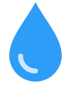

Better health
Safe water helps families reduce exposure to waterborne illness and build healthier futures.
Join students making clean water possible. 100% of public donations fund clean water projects — and you can follow the impact.
BIG CHANGE STARTS WITH PEOPLE LIKE YOU.

01 / THE PROBLEM
696 MILLION
people lack basic access to clean and safe drinking water.
For many families, getting water takes hours out of every day. That means less time for school, work, and the moments that matter. Clean water is the beginning of something bigger.
EXPLORE THE WATER CRISIS02 / THE IMPACT
When clean water is close to home, communities gain more than a safe drink. They gain time, opportunity, and possibility.
Safe water helps families reduce exposure to waterborne illness and build healthier futures.
Less time walking for water can mean more time in classrooms, especially for girls.
With hours back in their day, families can pursue work, community, and their goals.

Imagine having to miss class because your family needs water. For millions, this isn't imaginary. Supporting clean water helps communities spend less time collecting it and more time building their futures.
And with charity: water, you can see where generosity goes: projects are documented with photos and GPS coordinates.
SEE THE WORK03 / YOUR MOVE
You don't need a huge budget or a huge following. Just a reason to start.
Make a donation of any size through charity: water's secure website.
Share the mission with your group chat, classmates, or club.
Learn about the projects and tell someone why water matters.
SMALL GIFT. REAL IMPACT.
100% of public donations fund clean water projects. Give with confidence. Give someone a better chance.
